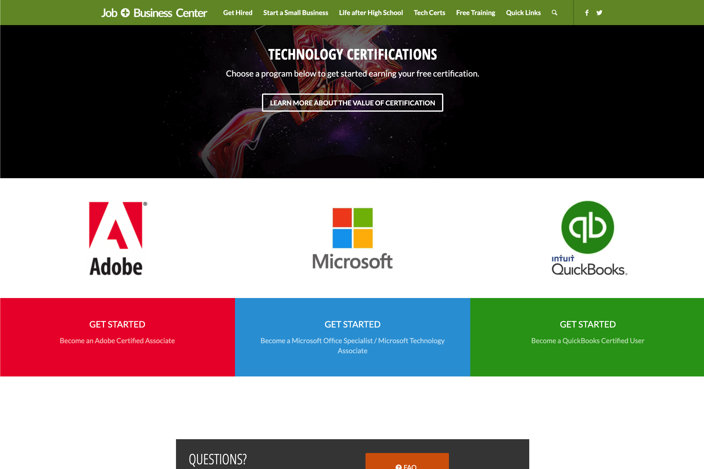

Marketing | Website | Promotion | Operations
Pierce County Library’s Technology Certification program allows customers to earn certifications in Microsoft Office, Adobe, and QuickBooks software. In partnership with the Washington State Library, customers receive scaffolded, personalized learning plans and support to help them earn certifications they can add to their résumés.
The Technology Certification program belongs to Pierce County Library System’s Get Hired umbrella program, connecting job seekers and entrepreneurs with information, training, and local agencies. It partners with WorkForce Central, WorkSource Washington, the Small Business Administration and other community organizations.
In addition to overseeing the Technology Certification program, I managed the Get Hired program operations for internal staff and external customers. Project objectives included increasing program accessibility and engagement, researching customer demographics, and improving customer loyalty.
